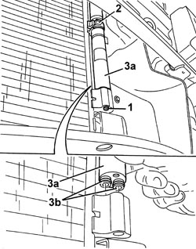

5040A44 AIR CONDITIONING DRIER FILTER/ACCUMULATOR - R+R
- Path
- Procedures > 50 AUXILIARY UNITS > 5040 AIR CONDITIONING CASING AND COMPONENTS > 5040A AIR CONDITIONING REFRIGERANT CIRCUIT > 5040A44 AIR CONDITIONING DRIER FILTER/ACCUMULATOR - R+R
- Kind
- repair procedure (removal / refitting; the operation number is the code)
- Applies to
- all engines; all production periods
- Interactive page
- https://sloeber94.github.io/elrnDB-aBrrSpdr/en/#/946002267
Applies to: all engines; all production periods
 Removing
Removing
 Refitting
Refitting- Drain the coolant
Op. 0010T84 COOLANT FOR AIR CONDITIONING SYSTEM - DEHYDRATE AND REPRESSURIZE
Op. 7055B54 UNDER ENGINE PROTECTION/GUARD - R.R.
1. Undo the drier filter retaining bolt
2. Open the retaining band.
3. Remove the drier filter (3a), releasing the connectors (3b).

Applies to: all engines; all production periods
Refitting
RemovingCheck that the drier filter is not damaged.
- Place the drier filter in position and attach the connectors.
- Close the retaining band.
- Tighten the drier filter retaining bolt
Op. 7055B54 UNDER ENGINE PROTECTION/GUARD - R.R.
- Repressurize the coolant
Op. 0010T84 COOLANT FOR AIR CONDITIONING SYSTEM - DEHYDRATE AND REPRESSURIZE
Topics linked from this page (3)
- 0010T84 COOLANT FOR AIR CONDITIONING SYSTEM - DEHYDRATE AND REPRESSURIZE
- 7055B54 UNDER ENGINE PROTECTION/GUARD - R.R.
- 7210E10 R.R. FRONT BUMPER